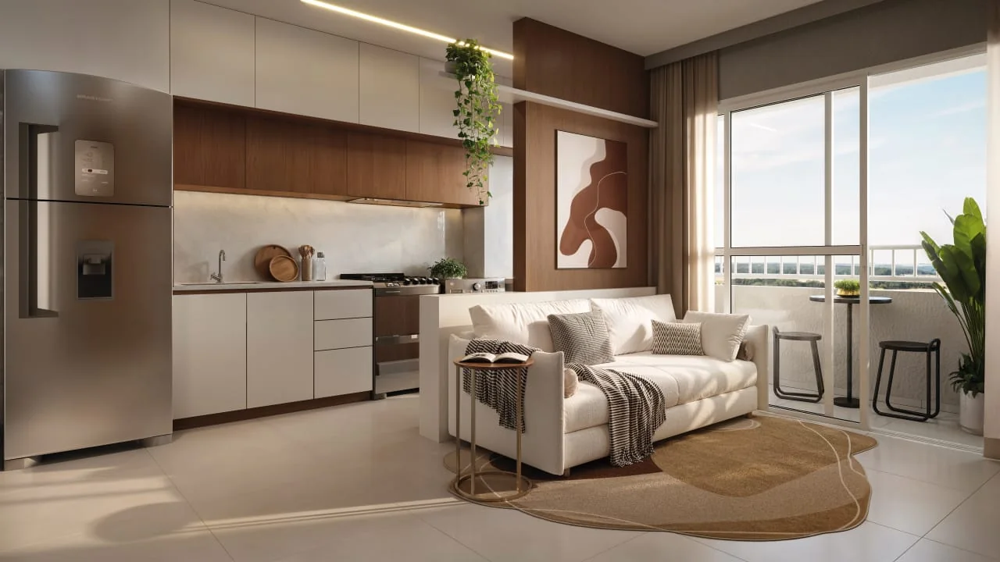
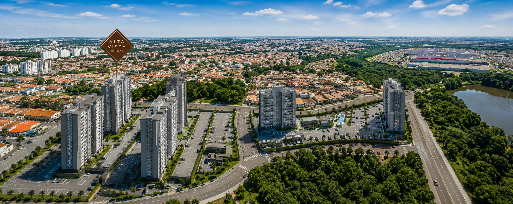

MANGARÁ • CAMPINAS
Viva em um novo
ponto de vista.
2 dormitórios com suíte*, varanda grill e lazer completo, cercado por conveniência, mobilidade e natureza.
Conheça o projeto ↓2 TORRES
300 UNIDADES
300 UNIDADES
ALTA VISTA MANGARÁ
Uma nova forma de morar em Campinas.
O terceiro residencial do Complexo Mangará combina apartamentos funcionais, áreas de lazer e comodidades para diferentes momentos do dia.

SEU ESPAÇO
Ambientes pensados para a vida real.
Plantas com 2 dormitórios, suíte*, varanda grill e infraestrutura para ar-condicionado nos quartos e na sala. Há também opções garden com jardim privativo.
Varanda grillSuíte*GardenLaje técnica
LAZER & CONVENIÊNCIA
Do treino ao descanso,
tudo mais perto.
Navegue pelas imagens usando as setas ou selecione uma miniatura.
1 / 10
PLANTAS ALTA VISTA
Conheça as configurações do Alta Vista Mangará.
Selecione uma opção para visualizar a planta em detalhes. Clique na imagem ou em “Ampliar planta” para abrir em tamanho maior.
MANGARÁ NATIVA
Planta-tipo Ponta • 46 m²
2 dormitórios, com distribuição funcional dos ambientes e os diferenciais técnicos indicados na planta.
MANGARÁ NATIVA
Planta-tipo Meio • 48 m²
Configuração de 2 dormitórios, com ambientes integrados e especificações técnicas apresentadas na planta.
MANGARÁ NATIVA
Planta-tipo Meio • 48 m²
Opção de 1 dormitório, com área social ampliada e organização dos ambientes conforme a planta apresentada.
MANGARÁ JARDIM
Planta Garden Ponta • 66 m²
2 dormitórios e área garden privativa, ampliando as possibilidades de convivência e uso dos espaços externos.
MANGARÁ JARDIM
Planta Garden Meio • 55 m²
2 dormitórios com área garden, reunindo a planta funcional do empreendimento a um espaço externo privativo.
IMPLANTAÇÃO
Visão geral do Alta Vista Mangará
Implantação com as duas torres, acessos, vagas e distribuição das áreas de lazer e conveniência do condomínio.
Plantas e implantação ilustrativas. Medidas, acabamentos, equipamentos e demais detalhes devem ser confirmados no material contratual e no atendimento comercial.
MAIS PRATICIDADE
Um condomínio que acompanha sua rotina.
Mini market, bike sharing, churrasqueira, lounges, brinquedoteca, espaço pilates, salão de festas, vaga elétrica e outras comodidades integram o projeto.

LOCALIZAÇÃO
No coração de uma região completa.
Rua Dois, nº 49 — Residencial Reserva Villa Bella, Campinas/SP.
2 min Shopping Dom Pedro3 min The Mall Villa Bella4 min Rod. Dom Pedro I6 min Unicamp
Tempos informados no book do empreendimento, com fonte Google Maps e trajeto de carro.Passe o mouse para ver os detalhes
QUER SABER MAIS?
Receba plantas, valores e condições.
Preencha seus dados e receba atendimento personalizado sobre plantas, disponibilidade, valores e condições do Alta Vista Mangará.